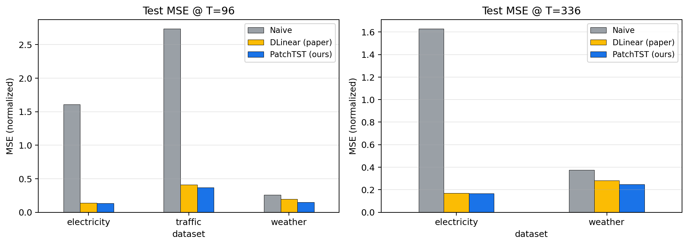
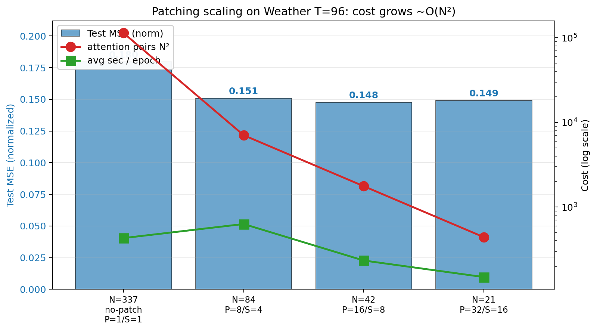
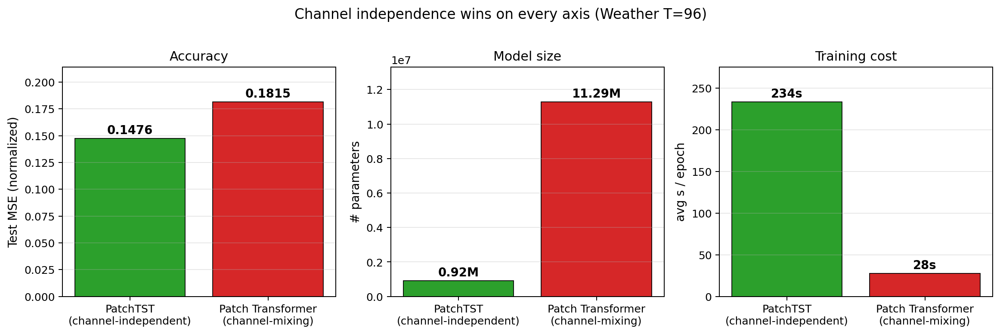
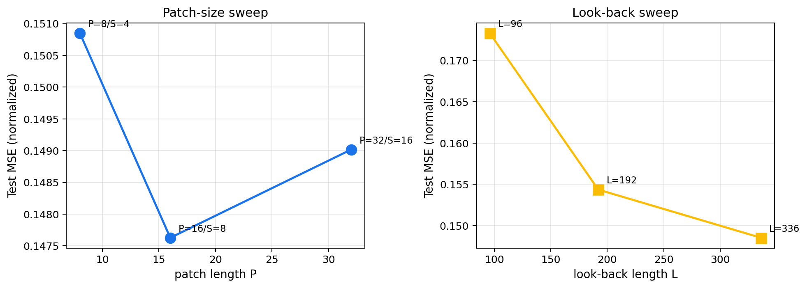
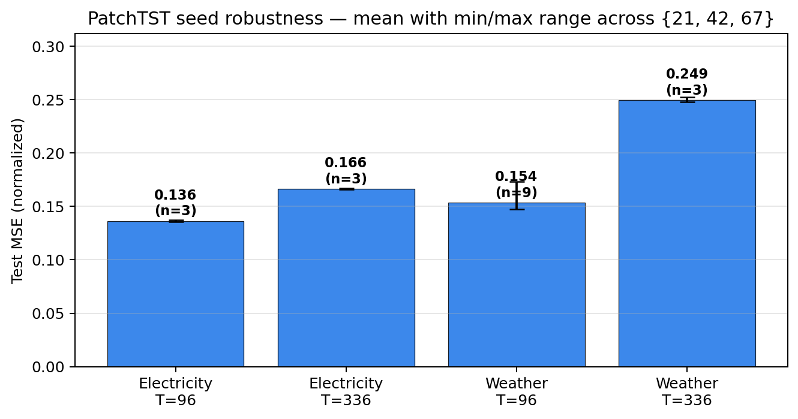
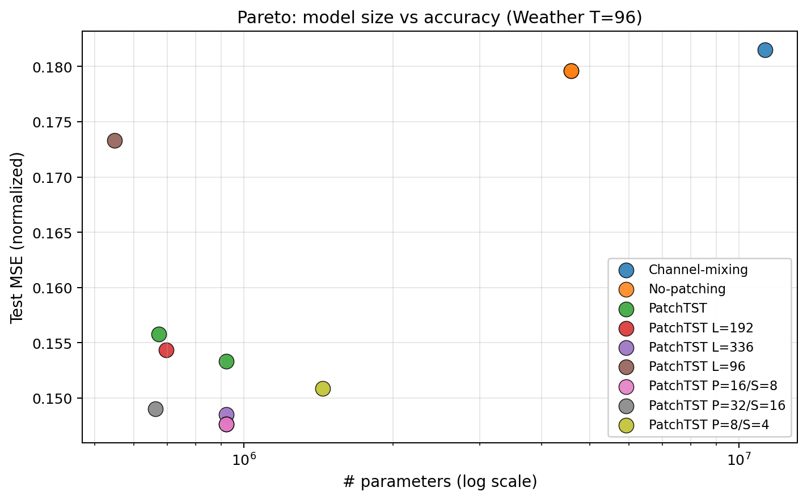

Cornell University
CS 4782 · Final Project · Spring 2026
A Time Series is Worth 64 Words Reimplementing PatchTST on Weather, Electricity & Traffic
Authors
Ashir Rao & collaborators
Paper: Nie, Nguyen, Sinthong & Kalagnanam
ICLR 2023 · arXiv:2211.14730
Paper: Nie, Nguyen, Sinthong & Kalagnanam
ICLR 2023 · arXiv:2211.14730
Why?Motivation
A one-layer linear baseline (DLinear) beat Transformers on long-horizon time-series forecasting.
PatchTST claims two architectural fixes that recover Transformer dominance — and we test whether both reproduce from scratch.
The two claimsWhat we verify
- Patching. Use subseries-level patches as tokens instead of single time steps. Fewer tokens, less noise.
- Channel-independence. Fold the channel axis into the batch — one Transformer is shared across channels and never attends across them.
How?Method & setup
- Model: 3-layer Transformer encoder · d_model 128 · 16 heads · d_ff 256 · dropout 0.2 · RevIN.
- Datasets: Weather (21 ch), Electricity (321), Traffic (862) — Autoformer/Informer release.
- Training: Adam · lr 1e-4 · batch 32 · 30 epochs · early-stop on val MSE · seeds {21, 42, 67}.
- Splits: 70/10/20 row-fraction. Metric: normalized MSE on test split.
- Baselines: naive last-value (ours); DLinear cited from paper Table 3 (TA-approved).
What's next?Future work
- Real cross-dataset transfer. Pretrain on Weather + Electricity, fine-tune on Traffic — tests the "foundation-model" framing PatchTST hints at.
- Scale SSL pretraining. Our 20-epoch single-dataset pretrain didn't help (see right column). Try 100+ epochs on a multi-dataset corpus.
- Sparse cross-channel attention. A learned k-NN-over-channels may keep useful cross-channel signal without the overfitting we observed.
- Calendar-month splits to close the last gap to the paper's reported numbers.
Are patches really worth 64 words?
Yes — and the savings come for free.

| Dataset | Horizon | Naive (ours) | DLinear (paper) | PatchTST (paper) | PatchTST (ours) |
|---|---|---|---|---|---|
| Weather | 96 | 0.257 | 0.196 | 0.152 | 0.148 |
| Weather | 336 | 0.374 | 0.283 | 0.249 | 0.253 |
| Electricity | 96 | 1.608 | 0.140 | 0.130 | 0.136 |
| Electricity | 336 | 1.630 | 0.169 | 0.167 | 0.166 |
Both core claims reproduce.
Within ~5 % of the paper across 4 / 4 cells.
Within ~5 % of the paper across 4 / 4 cells.
Does patching pay off?Claim 1

no-patch · N=337 · N²=113.6k · MSE 0.180
patch (16,8) · N=41 · N²=1.7k · MSE 0.153
~64× cheaper attention and lower MSE.
Patching is not just an efficiency trick — it improves
generalization.
Should channels share a model?Claim 2

independent · 0.92 M params · MSE 0.148
mixing · 11.3 M params · MSE 0.181
Independence wins with 12× fewer parameters.
Cross-channel attention overfits noisy multivariate series —
independence is a structural regularizer.
How sensitive is it?Ablations & robustness

Patch size: 8/4 → 0.151 · 16/8 → 0.148 · 32/16 → 0.149.

Look-back: 96 → 0.173 → 192 → 0.154 → 336 → 0.149.

Seeds {21,42,67}: std ≈ 0.001–0.002 — far below the gap to any baseline.

Pareto: mixing sits upper-right — Claim 2 isn't an under-capacity artifact.
Beyond the paperTwo new experiments

Patch order: permute a fraction of patches at
inference and measure MSE. Tests whether positional information
is load-bearing — the paper never asks. (Run notebook 06 to populate.)

Channel grouping: sweep k clusters from
k=1 (mixing) → k=21 (independence). The paper presents this as
binary; we test the spectrum. (Run notebook 06 to populate.)